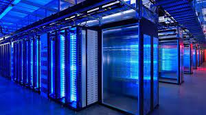
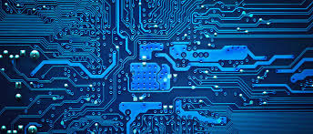

Seguridad InformáticaLa seguridad informática es crucial en la era digital actual. A medida que nuestra dependencia de la tecnología aumenta, también lo hace la necesidad de proteger nuestra información y activos digitales de las crecientes amenazas cibernéticas. |
 | |
Historia de la Seguridad InformáticaLos primeros indicios de preocupación por la seguridad informática datan de los años 60 y 70 con la
aparición de los primeros virus.
|
Tipos de Amenazas
|
|
Medidas de ProtecciónLa educación es la primera línea de defensa. Mantener el software actualizado, utilizar contraseñas fuertes, realizar copias de seguridad y evitar enlaces sospechosos son prácticas esenciales. Las soluciones de seguridad avanzadas, como firewalls y sistemas de detección de intrusiones, son vitales para organizaciones grandes. |

|
|
Con el aumento de la interconexión global, nunca ha sido tan esencial proteger nuestra información. Desde la protección de la privacidad individual hasta la seguridad nacional, la ciberseguridad es un aspecto crucial de la vida moderna que no puede ser pasado por alto.
{kind=link}
{kind=link}
{kind=link}